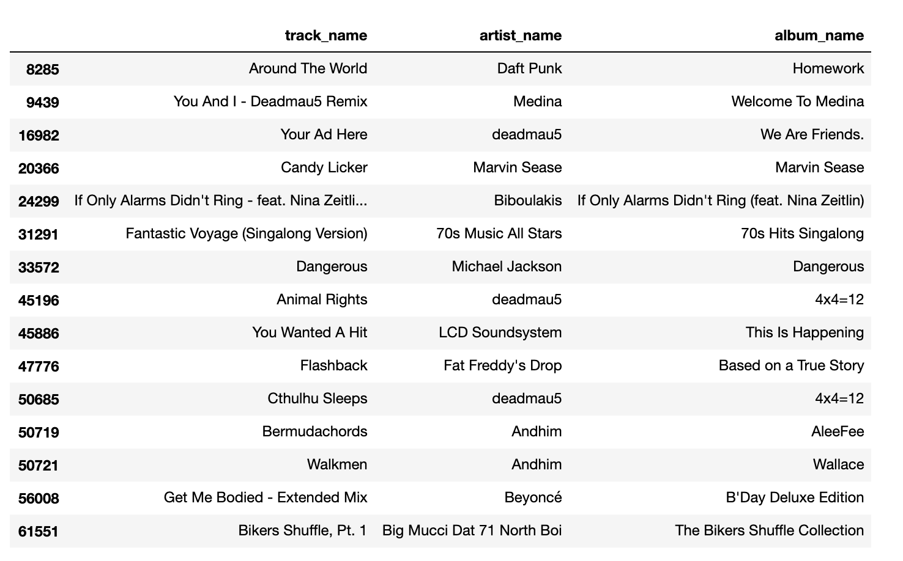
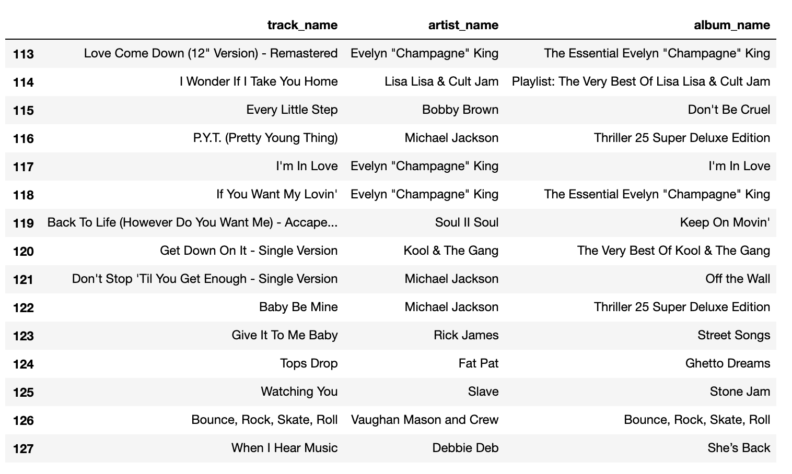
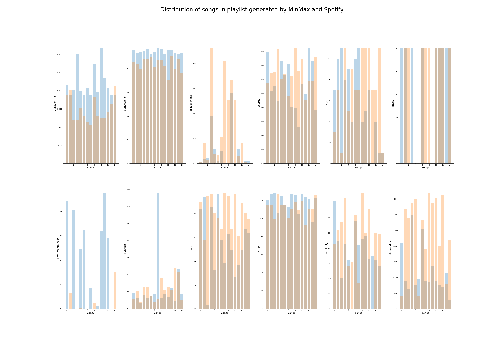
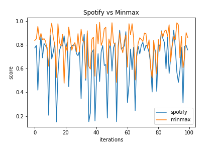
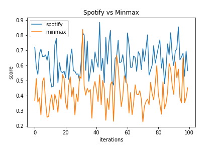

Our baseline model will be an unsupervised learning model as we do not have labeled data. First, we split the playlists into a train and test set using a 80-20 split, such that 80% of the total number of playlists form the training data and 20% form the test data. From the EDA, we observed the high pairwise correlation between energy, acousticness, and loudness, thus because of in our model we will keep just one of these parameters. We chose energy as it has the largest correlation with the other two. The other parameters were duration_ms, liveness, instrumentalness, danceability, key, mode, valence, tempo, and popularity. We now focus on the training set and use our k-means clustering algorithm to label playlists as belonging to one of 4 clusters. Having now obtained labeled data, we train a Random Forest with number of trees equal to 50 and maximum depth equal to 20 to match songs to their respective playlist cluster. While this is somewhat circular as we have used the k-means algorithm to label the data and we are now finding classes within the our own label data, it allows us to verify if our model makes sense and if it is performing well on our simplistic labeled data. We point that on the other end of the scale would be to allow each to be its own separate class, but this would likely lead to an intractable problem where the algorithm will either only work on large playlists or where it will not work at all. Some fancy bootstrap-like technique might provide salvation for the short playlists, but either way, we believe that allowing each playlist to be its own separate class will lead to over-fitting. We then evaluate our algorithm (the mix of k-means and Random Forest) on the train set and obtain a score of 0.993, while on the test set we obtain a score of 0.612. Of course there is a lot of improvements possible. One idea would be to focus only on large playlists and split them in training and test set song, and use Random Forest (or other classifier) on the training set. We would then use a large data base of songs and see what are the top predictions for songs (where the top prediction number equals the test set number of songs) and how many of these predictions are actually present in the test set.
We make an assumption that playlists often serve a purpose of accompanying a specific event. It helps set the tone and mood of an activity. Users create playlists for specific moods such as working out, partying, studying, and sleeping. For instance, a user that may be throwing a party would want to play a sequence of upbeat music. It would feel out of place for the guests to listen to a playlist full of classical music.
Our second assumption relies on the nature of music that different genres of music embody different features. For instance, we expect indie music to have high acousticness and low danceability. For simplicity, we assume that each genre has a maximizing and minimizing feature.
We design an algorithm such that it generates playlists based on the mood specified by the user. The algorithm takes in two features - one that the user wants to maximize and another that the user wants to minimize. We can use the two features as a proxy for the "mood" of the playlist.
From our original data set containing 1,000,000 playlists, we randomly choose 1000 playlists as our pool of songs. We then cluster the pool of songs using the KMeans algorithm. We randomize the number of clusters to be in between [4, 10]. For each cluster, we choose the top n songs with the highest values for the feature that the user wants to maximize. We define n as the number of songs in the playlist that yields to the best score in the Spotify data. We use the bootstrap method by running the KMeans algorithm 10 times, and choosing the playlist that yields to the best score. We define the formla for the best score below.
To define the evaluation metric for the playlists, we rely on the assumption that the playlist that reflects the best maximizing and minimizing features yields to the best user satisfaction. To compute the score of a playlist based on the maximizing and minimizing features, we take the difference between the mean of the two features. More concretely, if we have 2 playlists:
Setting the maximizing feature as danceability and minimizing feature as acousticness, we compare the playlist generated by MinMax on the left to the playlist generated by Spotify on the right.
 
The playlist generated by MinMax and Spotify have some songs that are similar. There are overlapping 70's music in both playlists. In the MinMax playlist, however, we see pop and edm artists such as Beyonce and deadmau5. It is interesting to see that while our model seems to be more diverse in the genre of tracks, whether this diversity would be welcomed among users is not clear. To analyze the results further, the distribution of features for each playlist is shown below,

To better understand the performace of our model, we run the experiment 100 times. In each run, we randomize the pool of our songs and the minimizing maximizing feature pairs. The plot below shows the comparison between our model and Spotify's model, 
The plot on the left shows that our model outperforms Spotify's model for features that are uncorrelated. For features such as (acousticness, instrumentalness) that show 0.36 in correlation coefficient, our model's underperforms, as shown in the plot on the right. However, we claim that users don't tend to create playlists with correlated features as both minimizing and maximizing features. To test this claim, we provide some methodologies in the future direction section.